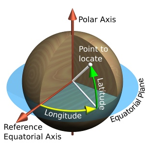

|
Created Wednesday 11 June 2014 by Thejesh GN
I wrote this for my map class at NID, Bangalore. This was written using ZimWiki which is an awesome note making software.
Contact
Email: i@thejeshgn.com
Web: http://thejeshgn.com
Earth
- Shape
- Theoretically
- Effect of gravity and rotation
- Spheroid or oblate ellipsoid
- The equatorial diameter is nearly 1/300 longer than polar diameter
- Assuming surface has a constant radius, any point on it is uniquely identified using a polar two-coordinate system
- Selected parallels (in red) and meridians (in blue), here spaced 15° apart, comprise a spherical graticule.
- Longitude is measured from GMT, Latitude from equator
 t t
courtesy
Representaion of Earth
- Map is a Representaion [ Globe(3d) to Map(2D) ]
- Projection - Conversion process and logic
- A geodetic datum is a set of parameters (including axis lengths and offset from true center of the Earth) defining a reference ellipsoid. For each mapped region, a different datum can be carefully chosen so that it best matches average sea level, therefore terrain features.
- Maps are never free from errors
- Distance Measurement
- Location
- Area distortion
- Shapes
- Directions
- Mercator projection - cylindrical map projection
- EPSG:4326 refers to WGS84 earth as an ellipsoid
- Has metric coordinates, uses lat and long
- Used by GPS
- WGS84 Bounds: -180.0000, -90.0000, 180.0000, 90.0000
- EPSG:900913 (EPSG:3857) Web Mercator refers to WGS84 earth is sphere
- Spherical mercator maps use an extent of the world from -180 to 180 longitude, and from -85.0511 to 85.0511 latitude
- Projection bounds -20026376.39 -20048966.10 20026376.39 20048966.10
- Initially by Google Maps for tiled maps
- Named by openlayers project - 'googlE' (substitute '9' for 'g' and squint a bit)
- Originally rejected by standards body, then accepted with 3857
- Used by OpenStreetMap and in general web
Data Type and Formats
- Raster
- Vector
- Point
- Line, MultiLine
- Polygon, Multipolygon
- Formats
- ShapeFile
- By ESRI
- Package .shp (shape), .shx(index), .dbf (attributes)
- Well Known Text (WKT)
- Text format
- Eg: POINT (30 10), LINESTRING (30 10, 10 30, 40 40)
- Web-Formats
Maps Services
- Tiled map service
- URI in REST
- Simpler than WMS
- Google, OpenStreetMaps, MapQuest (OSM) or MapBox (OSM), ESRI
- Web Map Service
- WMS
- Serves georeferenced map images
- Serves map in bitmap (PNG, GIF), Can also include vector maps like lines , served as SVG
- Example, like bhuwan or open weather map for data
- SVG Based Maps
- Jvector Maps
- Polymaps
- You can manipulate the map the way you do SVG graphics
- Can be use in conjunction with TMS or can be used independently
- Works fine on modern web browsers
Tools
- Desktop
- Web
- Databases
- Spatial DB (mostly spatial lite)
- PostGIS
Available Data to experiment
- Bangalore Data (Ward maps, BBMP election results, census data at BBMP level)
- BMTC Data (Bus stops and routes)
- BWSSB data (Water boundaries)
- PC and AC data, Election results
DO
- Conversions
- Address to GeoCode
- GeoCode to Address
- Raster to Vector
- Vector to Raster
- Expore different type of map file formats and conversions within QGIS or on web
- GIS DB & GIS functions
- Find center of Polygons
- Go to the menu -> Vector -> Geometry tools -> polygon centroid and create a centroid point layer
- Find if a point is inside a polygon (which ward do i belong)
- Intersect between points layer polygon layer
- Join attributes by location
- Add polygon attributes to points
- Terraformer JS script
- SpatialLite DB (spatialite_gui)
select * from BBMP_wards_2011_region where ST_Within(ST_GeomFromText("POINT(77.59456269966904 12.971598700795482)"),Geometry)
- Difference between layers
- Intersection (common area)
Reading List
Contributing back to GIS community
Plan
- Ask them what they want to know or do ❄
- Ask them what they already know ❄
- Map what they want to know ↔ what you are going to cover
- Class
- Point to resources for the extra/uncovered points
|